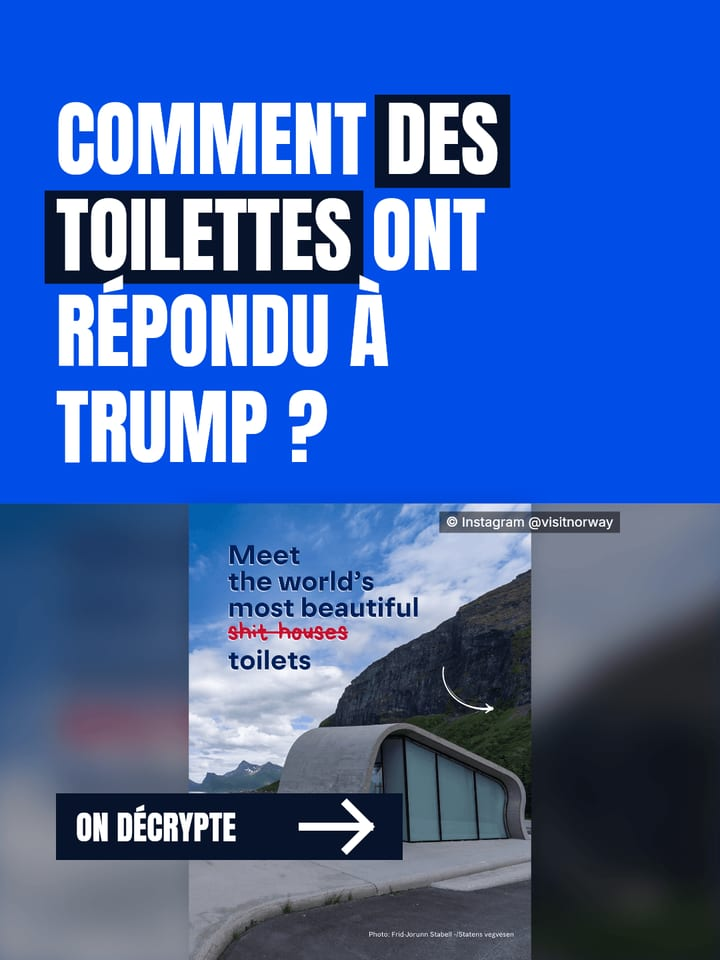

Projet perso · outil de création de contenu social media
De l’actu marketing au carrousel TikTok.
Décrypte repère chaque matin les sujets marketing qui font parler, rédige un carrousel sourcé aux couleurs de la marque, génère les slides au format TikTok et les programme. Je garde la main sur chaque texte, chaque visuel et chaque publication.

1/7Démo interactive
Le studio, comme je l’utilise
Une reconstitution de l’interface avec mes vraies données : la veille du 1er novembre 2026 et deux carrousels produits par l’outil. Dans la démo, la rédaction est simulée ; dans l’outil, Claude cherche et rédige pendant 5 à 15 minutes.
Fonctionnement
Cinq étapes, une seule interface
Le studio est une application web locale (Node.js) qui pilote Claude Code pour la recherche et l’écriture, et un moteur de rendu maison pour les visuels.
Veille
Chaque matin, recherche web sur l’actualité marketing des 7 derniers jours et sur des cas cultes. Huit sujets variés, avec angle, accroche, chiffres et sources.
Rédaction
Un clic sur un sujet : lecture des sources, récupération des visuels officiels, relevé des couleurs de la marque, écriture de 6 à 8 slides et de la légende.
Rendu
Slides dessinées sans navigateur (canvas), en 1080 × 1440, puis compressées. Les photos ne sont jamais coupées au mauvais endroit.
Contrôles
Chaque nombre affiché doit figurer dans sources.md, l’accroche fait moins de 10 mots, les contrastes respectent le WCAG. Sinon, rien n’est généré.
Programmation
Envoi à Metricool avec la date que je choisis : publication automatique, ou notification pour finir dans l’appli avec un son tendance.
Choix de conception
Ce qui fait la différence
Un contrôle automatique compare chaque nombre des slides avec le fichier des sources. Les liens sont conservés pour chaque fait et chaque image.
Couleurs relevées sur le site ou la charte de la marque, palettes modifiables et vérifiées pour rester lisibles. La mise en page, elle, reste celle du compte.
Format 3:4, zones recouvertes par l’interface mesurées sur l’appli, accroche courte, mots-clés mis en valeur, typographie française soignée.
Rien n’est publié sans moi : je choisis le sujet, retouche chaque slide dans l’éditeur et décide de la date de publication.
vues en 5 heures pour le premier carrousel publié avec l’outil, « Comment des toilettes ont répondu à Trump ? ».
Stack